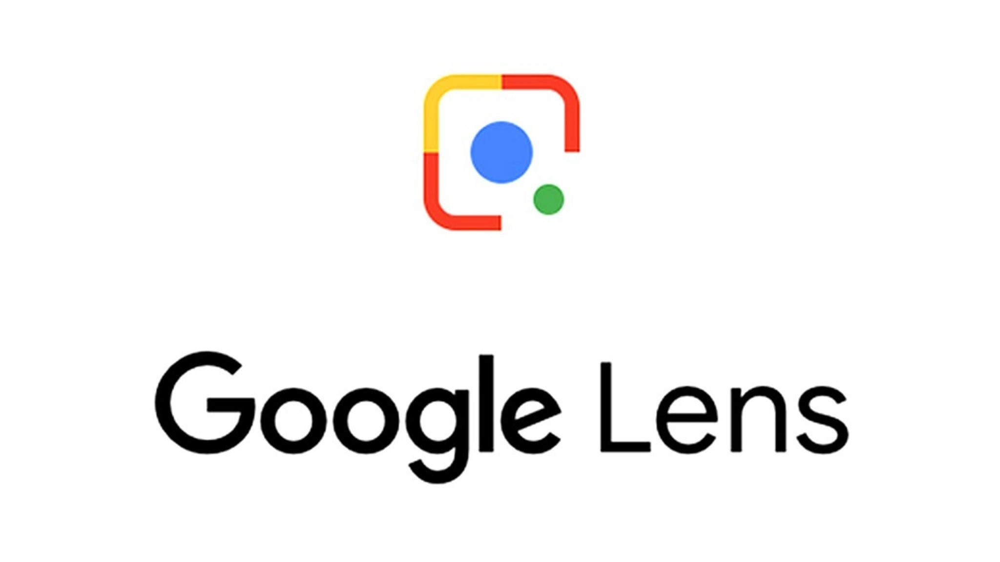
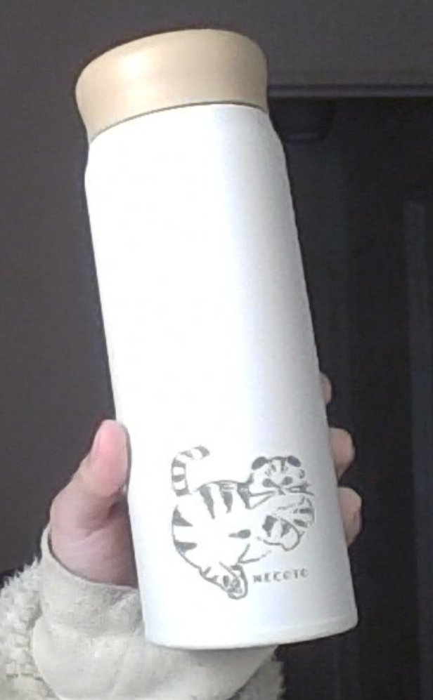
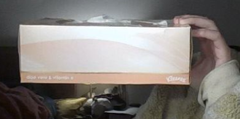

CASE STUDY BETWEEN GOOGLE LENS AND MOBILNET

VS
1. Test Image -Water bottle

Output on Google Lens
Result: Water bottle
Output on Mobilenet Model
Result: Hair spray
Google lens are more accurate
2. Test Image -Pen
Output on Google Lens
Result: Pen
Output on Mobilenet Model
Result: Syringe
Google lens are more accurate
3. Test Image -Highlighter
Output on Google Lens
Result: Green highlighter
Output on Mobilenet Model
Result: Pen
Google lens are more accurate
4. Test Image -A box of tissues

Output on Google Lens
Result: tissues
Output on Mobilenet Model
Result: Wooden box
Google lens are more accurate
5. Test Image -Teddy bear
Output on Google Lens
Result: A bear doll
Output on Mobilenet Model
Result: Doll bear
Both are accurate
I have taken 5 objects in my case study. Out of 5, the Google lens identified all the objects correctly while the Mobilenet Model only identified 1 objects correctly. Therefore, the google lens is more accurate overall.
Google lens: 100% accurate
Mobilenet: 20% accurate